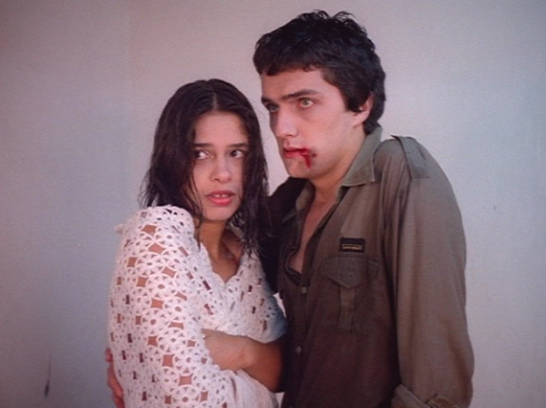

VERDES ANOS
|
(35 mm, 91 min, color, 1984) Tres días en la vida de un grupo de chicos del colegio, en 1972. Nando sale con Soninha, que le da bola a todo el mundo. Robertão presenta el baile de elección de la Reina. Teco se interesa por Rita. Dudu edita un diario de chismes. Pedro es el arquero del equipo, y está enamorado de la profesora. ¿Cuánto tiempo se tarda en pasar de la adolescencia a la madurez? ¿Un fin de semana, algunos años o la vida entera? |
 Foto por Christian Lesage: Márcia do Canto y Werner Schünemann |
{kind=link}
Dirección: Carlos Gerbase y Giba Assis Brasil
Producción Executiva: Sérgio Lerrer
Guión: Alvaro Luiz Teixeira
Dirección de Fotografia: Christian Lesage
Dirección de Arte: José Artur Camacho y Marlise Storchi
Música: Nei Lisboa y Nelson Coelho de Castro
Dirección de Producción: Rudi Lagemann
Montaje: Alpheu Ney Godinho
Asistente de Dirección: Alex Sernambi
Distribución Casa de Cinema PoA
Elenco Principal:
Werner Schünemann (Nando)
Marcos Breda (Teco)
Luciene Adami (Soninha)
Márcia do Canto (Cândida)
Marta Biavaschi (Rita)
Xala Felippi (Marieta)
Marco Antônio Sorio (Robertão)
Sérgio Lulkin (Pedro)
Zé Tachenco (Dudu)
Biratã Vieira (Leopoldo)
Haydée Porto (Bárbara)
Prêmios
-
12º Festival de Cine Brasileño, Gramado, 1984:
Premio Revelación.
-
Federación de Cineclubes do Rio de Janeiro, 1985:
Trofeo São Saruê Especial - Propuesta de Producción.
-
2º Festival del Cine Brasileño, Caxambu, 1985:
Mejor Guión y Premio Colectivo de Mejor Elenco
Crítica
"O filme define-se por si próprio através da sinceridade com que dá o seu recado. É por vezes comovedor a forma como ele mergulha em busca de um passado recente (o início dos anos 70), lançando uma luz sobre a história vivida pelos próprios realizadores. Na metade de seus vinte anos, Giba e Gerbase aventuram-se a olhar o passado e, através desse olhar, fazer uma reflexão sobre o seu mundo."
(Tuio Becker, FOLHA DA TARDE, Porto Alegre, 10/04/84)"Na tela, VERDES ANOS se passa descontraído e brincalhão como seu letreiro de apresentação. O tom de brincadeira se amplia quando o filme propriamente dito começa. (...) Solto, descontraído, o filme é como se nem fosse um filme mas só um conjunto de personagens que passem ocasionalmente diante dos olhos do espectador."
(José Carlos Avellar, JORNAL DO BRASIL, Rio de Janeiro, 12/04/84)"Se puede sentir la unidad del equipo, desde la propia producción (la película ha costado solo US$ 50 mil, increíblemente aún para los moldes brasileños) en cada etapa de la realización, incluyendo el trabajo de los actores. En estas circunstancias, los directores supieron crear innumeras situaciones graciosas y dramáticas."
(Nelson Hoineff, VARIETY, New York, 02/05/84)"Usted va a ver VERDES AÑOS por la primera vez para dar una ayudita. Al fin y al cabo, es una chiquilinada, gente de aquí poco dinero, esas cosas. Usted se ríe por la primera vez de buena gana. La segunda de sorpresa. La tercera de entusiasmo. Las carencias de la producción son evidentes, pero con diez minutos de película usted está entregado a su encanto. Pero le va a gustar aún por segunda vez."
(Luis Fernando Verissimo, ZERO HORA, Porto Alegre, 22/05/84)"VERDES ANOS é cinema de verdade. Em tudo, da edição à fotografia, do emprego da música à direção dos intérpretes, do jogo de planos à visualização de personagens e objetos, emana esse conhecimento das regras básicas da arte do filme."
(Hélio Nascimento, JORNAL DO COMÉRCIO, Porto Alegre, 29/05/84)"DEU PRA TI ANOS 70 (...) era o filme da esperança INVERNO foi o filme da resistência. (...) VERDES ANOS é o sonho. (...) Até mesmo nos finais de cada um dos trabalhos citados há uma coerência temática Todos falam de futuro, de continuidade na luta. Nas palavras cansadas de Werner Schünemann em INVERNO, nas ruas cruzadas por Pedro Santos em DEU PRA TI e no lírico final de VERDES ANOS. É este o nosso cinema. Aquele feito por jovens poetas do cotidiano, da chuva, do frio e da cerração."
(Goida, ZERO HORA, Porto Alegre, 01/06/84)"Os diretores não se proecuparam muito com os adultos. (...) À exceção de Leopoldo, pai de Nando, os demais aparecem como leves esboços. Pois este Leopoldo parece em muito com os 'pais' criados por Erico Verissimo, em sua contestação, lucidez política e machismo exacerbado. Não é sem razão que seu filho será um dos primeiros a atingir a maturidade no belo epílogo. (...) Mas talvez a magia de VERDES ANOS não esteja em seus acertos. Talvez a melhor explicação se encontre neste verso de Bob Dylan: 'Há alguma coisa de ti neste lugar, algo que me traz de volta uma verdade há muito esquecida.'"
Júlio Ricardo da Rosa, ZERO HORA, Porto Alegre, 01/06/84)"Simpático, agradável, com alguns momentos bem feitos e outros nem tanto, VERDES ANOS tem um defeito que a muitos poderá até parecer virtude: é a sua exagerada simplicidade. Aliás, simplicidade não é a palavra correta: falta um pouco de ambição, falta um trabalho de elaboração intelectual para que, por detrás do episódio da narrativa, se descubra uma reflexão mais profunda. (...) Resumidamente, é descartável. E lembra, por isso, uma observação de Guimarães Rosa sobre a anedota, que ele compara ao palito de fósforo: deflagrado, perde o uso."
(Luiz Carlos Merten, JORNAL DO IGUATEMI, Porto Alegre, junho/84)"Tampouco no tema, (...) VERDES ANOS se enquadra em alguma das tendências que garantem maiores bilheterias ao cinema nacional - não há cenas de sexo, explícito ou não, violência, tentativas de doutrinação política ou denúncias da situação do país. (...) Seu segredo é colocar na tela pessoas e fatos comuns - namorinhos, bailes, jogos de futebol, amizades, bebedeiras e, principalmente, a perplexidade de não ser nem criança nem adulto."
(VEJA, São Paulo, 03/10/84)"Ao final, ficamos com o drama individual de Nando que, em vão, tentou conquistar o coração de Soninha. Sua busca sincera do amor não apenas é comovente mas aparece como uma alternativa possível entre tantos encontros e desencontros juvenis, cujo pano de fundo é a melancólica paisagem do interior do Rio Grande. (...) VERDES ANOS é marcado pelo sotaque sulino e não procura disfarçar sua origem artesanal. Nem por isso deixa de ser um retrato absolutamente sincero de uma geração que raríssimas vezes viu-se refletida nas telas dos cinemas."
(Maria Lúcia Froes, FOLHA DE SÃO PAULO, 25/04/86)"Preparem-se, corações: vai doer. Porque saudade sempre dói. Ainda mais aqui, nessa viagem de volta ao comecinho dos anos 70, na meiga companhia dessa turma que, como eu, amava os Beatles e os Rolling Stones, (...) apertava um e acreditava piamente em paz e amor. Em VERDES ANOS, o pesadelo apenas se insinua, no personagem da professora. O resto é sonho. É o que éramos. Rapazes e moças que gostava de namorar, de jogar bola, de aprontar na sala de aula, de bailinho, de papo furado, de rir das maiores bobagens. A moçada do filme reconstitui esse verdor com simplicidade comovente. (...) Trazem, lá do sul, uma saudade antiga, bonita, de fazer chorar."
(José Márcio Penido, O ESTADO DE SÃO PAULO, 25/04/86)"O roteiro de VERDES ANOS é bem mais complexo do que o filme, ou seja, os diretores Gerbase e Assis Brasil retiraram do filme todo o conteúdo violento e político que a história continha. (...) Cortaram todas as cenas de violência na prisão e todo um personagem, um jovem que era metralhado no final. Foi pena. (...) Resultou um filme simpático, do qual eu e o roteirista Alvaro Luiz Teixeira até gostamos, mas ingênuo, juvenil demais. Engraçado é que é exatamente esta ingenuidade, este frescor, que torna o filme encantador para quem o vê sem ter conhecido a história verdadeira."
(Luiz Fernando Emediato, A GAZETA, Rio de Janeiro, 15/09/86)
25/05/1984